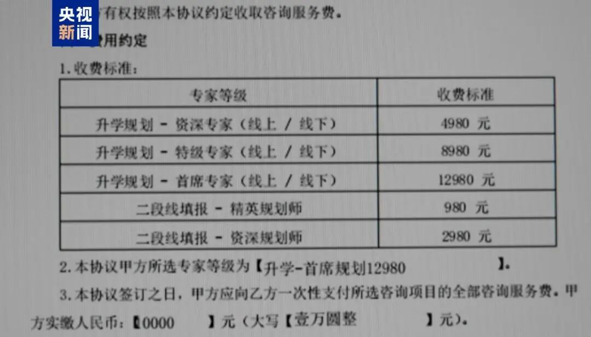
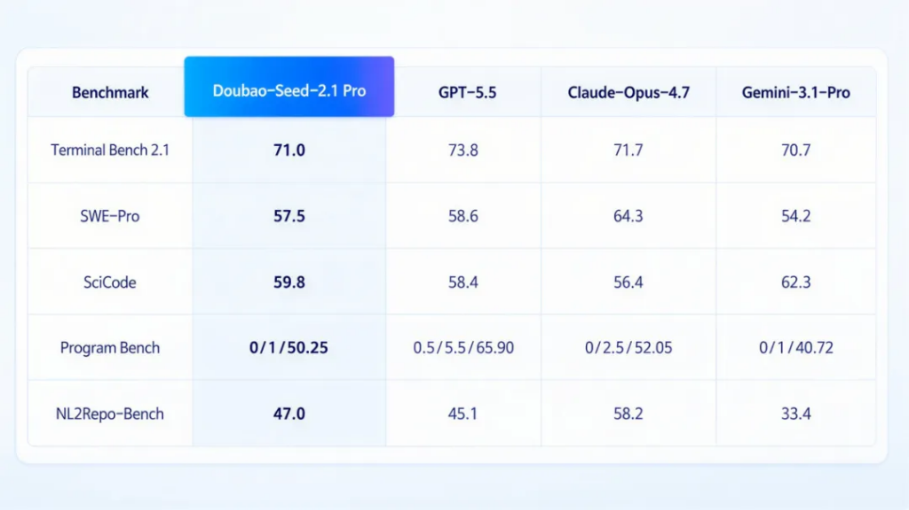

No KPI, No Performance Targets: MiniMax Grants HK$600M in Stock to Employees, Fully Vested Upon Tenure Completion; Apple Lobbies Trump Administration to Source DRAM from China's CXMT; DeepSeek and Peking University Open-Source DSpark | AI Weekly
No KPI, No Performance Targets: MiniMax Grants HK$600M in Stock to Employees, Fully Vested Upon Tenure Completion; Apple Lobbies Trump Administration to Source DRAM from China's CXMT; DeepSeek and Peking University Open-Source DSpark | AI Weekly
View More Industry Coverage >>
Industry Spotlight
Falsified Qualifications, AI-Powered Responses: CCTV Investigation Reveals Widespread Fraud in College Application Consulting
An undercover CCTV investigation has revealed systemic fraud in the college-consulting industry: falsified credentials, anxiety-inducing marketing, AI-generated advisory responses, and referral schemes for self-study programs. Numerous parents who paid thousands of yuan remain dubious of the services delivered.

Certain agencies tout a proprietary "big-data system" aggregating five years of admission scores, offering a bundled "AI plus human screening" service. One parent reported spending more than RMB 10,000; 30 to 40 other parents were concurrently enrolled at the same institution. The stated motivation was closing the information gap, yet the parent harbored persistent doubts about the plans' professionalism and practical value.
The "exclusive" big-data and smart-scoring systems marketed by these agencies are merely publicly available admission statistics from provincial examination boards — data obtainable at no cost online. This freely accessible information is rebranded as a premium resource, commanding service fees of thousands to tens of thousands of yuan.
The investigation found that many agencies market themselves as employing "senior planners with over a decade of education expertise." In practice, these purported experts rely entirely on AI tools to retrieve and assemble answers during client consultations — their methods are amateurish, their responses formulaic, and their analyses devoid of any personalized consideration of the student's scores, personality, or career goals. The "admission planner" title is, in essence, a sales position. Fabricated professional personas are industry standard.
The investigation further uncovered an opaque gray profit chain: certain admission consulting operations function purely as lead-generation vehicles, with the core revenue model revolving around referring students to partner institutions for substantial commissions.
No Performance Targets: MiniMax Grants HK$600 Million in Stock, Fully Vested Upon Tenure Completion
June 24 — MiniMax disclosed a share incentive plan on the HKEX. Pursuant to its post-IPO equity incentive scheme, the company is granting 1,168,800 Class A ordinary shares to executives, all current employees, and external service providers. The exercise price is set at zero; recipients are not required to fund the purchase.
By allocation: Executive Director Zhao Pengyu received 250,000 shares; regular employees collectively received 908,500 shares, constituting the incentive's primary beneficiary group; external service providers received 10,200 shares. The vesting horizon spans 13 months to six years, with differentiated staggered unlock schedules for directors and service providers. Critically, the plan imposes no performance metrics — employees need only satisfy the tenure condition to unlock shares on schedule. Valued at the grant-date closing price of HK$515, the aggregate market value of this company-wide equity incentive approximates HK$600 million.
Approximately two weeks ago, MiniMax launched the "10xTeam" global talent initiative, targeting experts in hardcore technical domains — chips, industrial software, game engines. The model is flexible: both full-time and short-term part-time experts are eligible, and all engagement formats include equity incentive provisions. The program is designed to accelerate high-end external talent acquisition.
U.S. Government Poised to Lift Restrictions on Anthropic's Fable 5 Model as Early as Next Week
The Trump administration is nearing approval for Anthropic to reinstate its Fable 5 model — offline for 15 days amid government security concerns. Insiders anticipate restrictions may be lifted by next week; communications are expected to continue through the weekend. Anthropic is expected to restore access shortly thereafter.
Friday, the U.S. Department of Commerce permitted Anthropic to reinstate Mythos 5 access for a limited set of vetted users. Commerce Secretary Lutnick, in a letter to Anthropic, acknowledged the company's collaboration with the U.S. government in addressing risks tied to Mythos 5 and Fable 5, noting that material progress had been achieved. Anthropic has committed to ongoing cooperation with the U.S. government on agreements, standards, and future releases.
Major Tech Companies Revise Employee Token Allocation Policies
Per industry publication "Big Tech Youth," multiple major technology firms have recently revised employee token allocation policies.
Tencent has transitioned from a blanket company-wide token allowance to task-based dynamic allocation. Employees demonstrating measurable efficiency gains or value creation via AI are prioritized for token quotas.
On Weibo, some noted that early this year, employees with low AI usage and token consumption were publicly reprimanded via email, with senior leadership copied. As token burn rates intensified, the cost center proved unsustainable. A planned front-end developer examination, sources say, was ultimately scrapped because the projected token expense was deemed prohibitive.
Kunlun Tech's latest internal notice expanded API access to all product, operations, marketing (growth), and design personnel, while simultaneously eliminating reimbursement for personal subscription fees.
Former Google CEO Slams China's AI Open-Source Push: 'Beyond Our Control, and I Strongly Dislike It'
June 25 — the topic 'Former Google CEO Criticizes China's AI Open Source' trended on Chinese social media after a blogger circulated a clip of Eric Schmidt in conversation. Schmidt discussed the U.S.-China AI competition and DeepSeek, asserting that he and other government officials had aggressively pursued restrictions on AI chip exports to China. The policy, he said, initially appeared effective but has since begun to unravel.
Schmidt conceded that Chinese researchers have produced state-of-the-art AI models using comparatively weaker hardware, specifically citing Huawei's Ascend chips and software-based workarounds for latency and architectural constraints. He expressed comfort with the U.S. having genuine competitors, but voiced strong opposition to China's aggressive promotion of open-source AI — technology that, he said, operates largely beyond U.S. influence or any governance. A year ago, Schmidt estimated the U.S.-China AI gap at one to two years; the latest analysis, he noted, puts it at under six months. 'In our world, that is barely a nanosecond.'
DeepSeek Expands Hiring Significantly; Harness Team Lead Acknowledges Relentless Interviewing
June 25 evening — DeepSeek published an expansion hiring notice, stating it aims to at least double every department. The campaign spans 33 roles across seven categories, based in Beijing and Hangzhou. 'Our hiring principle,' the announcement reads, 'is to place newcomers directly on the most critical and consequential tasks. Here, many colleagues rapidly develop into top-tier talent and become the driving force behind AGI advancement.'
June 23 — DeepSeek Harness team lead Cui Tianyi wrote on social media that the newly formed department faces a substantial workload relative to its ambitious mandate, and is severely understaffed. 'I interview daily and circulate recruitment notices across multiple platforms,' he noted. Three positions remain open: Harness Researcher, Harness Engineer, and Harness Product Manager, based in Hangzhou and Beijing.
Responding to a claim that 'DeepSeek does not hire foreigners,' Cui responded: 'Just as comparable U.S. firms require English proficiency for work, DeepSeek requires Chinese proficiency. The company maintains no policy barring foreign nationals.'
The Harness team, sources indicate, is central to DeepSeek's strategic ambition of rivaling overseas products such as Claude Code with a domestically developed AI coding agent. Newly opened positions, including 'Agent Harness Product Manager,' will be involved in the full life-cycle development of DeepSeek's desktop Agent product. Market analysts anticipate an Agent product launch in the near term, signaling an acceleration of DeepSeek's commercialization trajectory.
Alibaba Internally Promotes 'One-Person Team' Model; Executives Participate in Group Rice Planting
Per 'Big Tech Daily,' Alibaba is internally implementing OPT (One Person Team) — encouraging front-end engineers to assume back-end responsibilities and vice versa. The objective is to minimize multi-person collaboration overhead and superfluous cross-team communication, yielding multiplicative efficiency improvements.
June 22 — Alibaba partner and AutoNavi (Gaode) chairman Liu Zhenfei published an internal post titled 'With Seedlings in Hand, Grain Is Secured for the Future,' chronicling a recent management team-building exercise in Hangzhou: planting rice seedlings. 'A dozen of us labored an entire morning and managed, rather haphazardly, to plant just half a mu of paddy,' he wrote. Netizens quipped that it was a real-life rendition of 'Baba Farm.'
Event photographs reveal a sizable contingent of Alibaba and Ant Group executives in attendance — including Jack Ma, Eddie Wu, Shao Xiaofeng, Fan Jiang, Wu Zeming, Fang Jiang, Ant Group Chairman Eric Jing, and CEO Han Xinyi. Alibaba Chief Scientist Jessie Zhou was also present at the planting site. The event follows a significant public controversy over the 'Inside DingTalk' incident, after which Zhou was rumored to be departing; Alibaba has denied those reports.
Alibaba has a longstanding tradition of team-building exercises intended to bolster organizational vitality and team morale. This 'rice planting' event, however, was perceived as more than a routine outdoor activity — it was interpreted as a collective declaration by management regarding the company's AI strategy. A person close to Alibaba characterized the gathering — attended by most key executives in a relaxed setting — as a signal of confidence: Alibaba personnel remain united, optimistic, and firmly committed to the company's current trajectory and the promise of AI.
Micron Executive Criticizes Apple's Pricing Practices; Apple Lobbies Trump Administration to Source DRAM Chips from China's CXMT
A financial-influencer account disclosed a Micron Technology executive's public criticism of Apple's pricing practices. For more than a decade, Apple procured memory chips at $5, performed rudimentary packaging, and resold the upgrade to consumers for $99 — rebuffing Micron's attempts to increase the unit price to $7. With chip procurement costs now at $50, Apple has passed on the pressure to consumers with a $250 upgrade surcharge, multiplying the cost burden.
Apple has implemented global price increases across multiple hardware lines, citing tight memory supply and aggressive price hikes by storage manufacturers. Tim Cook noted that memory vendors are passing on substantial cost increases to consumers. Fourteen products — including Mac, iPad, Vision Pro, and HomePod — have been affected. The MacBook Air base price rose from RMB 8,499 to RMB 9,999 (a RMB 1,500 increase); the iPad Pro base price increased from RMB 8,999 to RMB 10,799 (a RMB 1,800 increase).
Micron Chief Business Officer Sumit Sadana implicitly attributed the memory supply crunch to Apple's historically aggressive price-depressing procurement tactics. The industry, he noted, halted substantial capital investment in 2023 amid unsustainably low pricing and razor-thin margins. Customer-driven price suppression eroded storage makers' profitability, precluding capacity expansion and setting the stage for the subsequent shortfall. Micron's fiscal third-quarter revenue jumped 346% year-over-year, gross margins approached 85%, and fourth-quarter revenue guidance surpassed consensus estimates — the stock surged nearly 16% the following session.
June 26 — Elon Musk posted on X that Apple CEO Tim Cook had characterized the memory shortage to the Wall Street Journal as a 'once-in-a-century flood,' adding that in over four decades of his career, he had never witnessed a comparable situation. Musk endorsed Cook's assessment, stating: 'This is absolutely the biggest price increase I have ever seen in my life.'
June 27 — Six people familiar with the matter told the Financial Times that Apple is lobbying the U.S. government for permission to procure memory chips from Chinese semiconductor firm CXMT (ChangXin Memory Technologies) to mitigate cost pressures from surging memory prices. CXMT and YMTC (Yangtze Memory Technologies) are designated on the U.S. Department of Defense's 'Chinese Military Companies' list, though inclusion typically does not directly bar commercial transactions. The global memory chip market remains dominated by Micron, Samsung, and SK Hynix.
Mercedes-Benz Defers Bonus for 90,000 German Employees, Increases Annual Working Hours by 260
Mercedes-Benz is modifying working conditions for its German workforce: weekly hours increase from 35 to 40 without additional compensation, equating to roughly 260 extra working hours annually. Concurrently, a special bonus — equivalent to approximately 18% of monthly salary and originally slated for July distribution to some 90,000 employees — has been postponed to 2027. The adjustments reflect broad industry headwinds, including tariff pressures and weaker-than-anticipated EV demand.
WeChat Deploys Largest-Ever Update; Multiple Features Comprehensively Upgraded
June 23 — WeChat's native AI assistant 'Xiao Wei' entered a limited internal beta. Authorized users who update to version 8.0.75 can access AI features by tapping the 'Xiao Wei' icon at the top left of the main interface, or by swiping right from the home screen.
Media outlets reviewed the Xiao Wei beta immediately upon release. In both interaction design and feature breadth, it is described as the most significant update in WeChat's history. Once inside Xiao Wei, users can execute basic functions via text or voice — including conversation, file reading, reminders, message sending, money transfers, and Moments management. Example prompts: 'Send Happy Birthday to Mom,' 'Transfer money to XXX,' 'Summarize key content from the last two days of Moments,' and 'Remind me to drink water in five minutes.'
Notably, Xiao Wei requires a second confirmation before sending messages, and manual password entry for money transfers. It cannot access users' private or group chats. However, within any individual or group conversation interface, users may invoke Xiao Wei to read and summarize the chat history.
'Inside the Company' Resignation Essays Sweep Chinese Social Media
Following a 75,000-character resignation essay by a former DingTalk AI product manager titled 'Inside DingTalk' (置身钉内), a former Meituan food-delivery employee authored a 2,000-character 'Inside Meituan' (置身团内), and a former Xiaomi campus recruit released a 4,000-character 'Inside Xiaomi' (置身米内). A piece on AutoNavi titled 'Inside AutoNavi' (置身德内) also circulated in limited circles. Each essay critiques organizational and managerial dysfunctions at the respective companies.
The three essays, each written from a deeply personal and aggrieved perspective, reflect distinct pathologies afflicting companies at an advanced stage of growth.
'Inside DingTalk' lays bare a 'distorted management culture.' The author chronicles the AI project 'ONE' from its peak of three million daily active users to its eventual contraction, attributing the failure to a 'rigidly operating corporate system' — one in which 'working overtime signifies dedication, involution signals loyalty, and obedience equates to correctness.'
'Inside Meituan' reveals the 'trap of path dependence.' Meituan, the author argues, prevailed in the group-buying wars through extreme cost discipline and relentless execution; however, its organizational DNA of 'frugality and obedience' hardened into path dependency. What once drove victory — 'extreme execution' — now constrains the company, a classic 'curse of the successful.'
'Inside Xiaomi' targets the 'founder-centric' predicament. The author compares Lei Jun to Xiang Yu — 'whichever product line Boss Lei personally touches turns to gold.' But individual capacity is finite. When an organization becomes critically reliant on its founder's personal capabilities, related businesses stall the moment he steps away.
Oracle Cuts 21,000 Jobs; Fiscal 2026 Headcount Declines 13%
June 23 — Cloud giant Oracle continued its business restructuring amid enterprise-wide AI deployment. Fiscal 2026 headcount fell 13%, representing roughly 21,000 job cuts. The company's annual report, filed Monday, showed 141,000 employees as of May 31, 2026 versus approximately 162,000 a year earlier.
The filing revealed $1.84 billion (approximately RMB 12.49 billion at current rates) in restructuring-related severance and separation costs for fiscal 2026, well above the prior year's $374 million (approximately RMB 2.54 billion). Oracle attributed the workforce reductions to multiple factors: management and product-line changes, underperformance, strategic pivots, and acquisition integration.
Google Delays Gemini 3.5 Pro Launch to July; Two Core Contributors Defect to Anthropic
June 25 — Google's next-generation frontier AI model has been pushed to July, sources say. The company had previously targeted a June launch for the new Gemini 3.5 Pro, but has adjusted its timeline to July to incorporate early tester feedback and perform optimization adjustments.
The new Gemini 3.5 Pro is expected to deliver gains in two areas: long-context tasks and agent-driven scenarios. Sources confirmed that Google has integrated user feedback from the recently released Flash 3.5 — including criticism of its excessive token consumption rate — into the Gemini 3.5 Pro development process.
Separately, sources indicate Google is restructuring a recently formed task force focused on AI-powered coding tools. The unit — created only months ago — will refine Google's AI model training methodology, targeting improvements not only in code generation but also in presentation creation and other scenarios. Beyond expanding the task force's scope, the restructuring will formalize what began as an interim team structure.
The restructuring follows the planned departure of Jonas Adler and Alexander Pritzel. Adler contributed to Google's AI coding initiatives; Pritzel was involved in AI system training. Both are regarded as critical Gemini contributors, and both are decamping for Anthropic.
Bypassing Nvidia: OpenAI and Broadcom Unveil First Custom AI Chip
June 24 — OpenAI publicly demonstrated its custom AI chip 'Jalapeño,' co-developed with Broadcom, marking its first step toward accelerating AI computing infrastructure while reducing reliance on Nvidia GPUs.
Jalapeño, co-developed by OpenAI engineers and Broadcom, is designed primarily for AI inference. Broadcom CEO Hock Tan told Reuters its performance rivals Nvidia's Blackwell and Google's TPU. OpenAI hardware chief Richard Ho stated the chip is purpose-built for large language models, enabling faster and more efficient inference for AI applications. 'We believe Jalapeño will also accommodate future iterations of LLMs while sustaining strong performance,' Ho said. Deployment is slated for year-end 2026. The first chip, sources say, is only the beginning — multiple future generations are planned.
Musk's Orbital AI Constellation Dubbed 'Starmind'; SpaceX Shares Tumble
June 24 — Elon Musk confirmed on social media that SpaceX's long-anticipated LEO AI satellite constellation is officially named 'Starmind.' The project — envisioning up to one million computing satellites — was first disclosed on January 30, 2026, when SpaceX filed an FCC application for up to one million specialized computing satellites in low-Earth orbit. The core mission: build a distributed AI computing cluster in space to alleviate terrestrial data-center power shortages and cooling costs.
June 23 — SpaceX shares declined for a third consecutive session. Monday, the company announced senior unsecured note issuance and disclosed roughly $100.8 billion in cash reserves — the bond offering coming days after its record IPO. Shares fell nearly 17% Monday to close at $154.60, below the first-day closing price of $160.95. The stock has now dropped for three straight sessions, for a cumulative decline of 27% from the June 16 close of $211.39.
SpaceX and Tesla share declines have pushed Elon Musk's net worth below $1 trillion, to $957 billion, stripping him of his 'world's first trillion-dollar billionaire' title. Despite the drop, Musk retains the top position on the Bloomberg Billionaires Index by a wide margin over the runner-up.
Separately, sources indicate OpenAI is inclined to postpone its IPO until next year. The company had engaged investment banks and law firms targeting a Q3 or Q4 offering. However, a chain of recent events — particularly SpaceX's post-IPO share decline and volatile global markets over recent weeks — has prompted investors to question whether AI companies can meet their lofty growth projections.
Weekly AI Model Roundup
Key Launches
DeepSeek and Peking University Open-Source DSpark: High-Concurrency Inference Speed Gains 60%–85%
DeepSeek and Peking University have released DSpark, an inference acceleration framework designed to resolve LLM throughput bottlenecks in high-concurrency production environments. Currently deployed on DeepSeek-V4-Flash and the DeepSeek-V4-Pro preview engine, DSpark delivers single-user generation speed improvements of 60% to 85% over the MTP-1 single-token speculative decoding baseline at equivalent throughput. The paper, training code, and related materials are available on GitHub.
Paper: https://github.com/deepseek-ai/DeepSpec/blob/main/DSpark_paper.pdf
DSpark tackles bottlenecks in speculative decoding candidate quality and verification-stage compute overhead, introducing a semi-autoregressive architecture and a confidence-scheduled verification mechanism. The semi-autoregressive architecture generates candidate hidden states and base logits in a single pass via parallel backbone networks, with a lightweight sequential module injecting prefix-dependency information for improved parameter efficiency. The confidence-scheduled mechanism dynamically adjusts verification length based on candidate-position confidence scores, using a hardware-aware prefix scheduler to optimize compute allocation. In offline benchmarks spanning math reasoning, code generation, and conversational tasks, DSpark's per-round average acceptance length surpasses both the autoregressive draft model Eagle3 and the parallel draft model DFlash.
In production, DSpark's draft model uses a tailored architecture with training-phase system optimizations to reduce communication complexity and compute-memory overhead. Engineering integration leverages asynchronous scheduling and the decoupling of physical execution from logical sequence tracking. Online measurements demonstrate substantial throughput gains across diverse engines and SLA tiers, with a load-adaptive verification budget allocator. The limitation: for complex queries, the draft computation cost of a full initial candidate block is non-recoverable.
Using AI to Fight AI: OpenAI Deploys New Cybersecurity Model
Early June 23 — as Anthropic's Mythos model faced intensifying security scrutiny, OpenAI CEO Sam Altman posted four consecutive announcements on X, unveiling GPT-5.5-Cyber, a model purpose-built for cybersecurity. GPT-5.5-Cyber is designed for advanced, authorized defense operations: tracking vulnerable code, verifying issues, generating patches, and preparing evidence for human review.
'We want to help every company become secure,' Altman said. 'Frontier defense capabilities should not be concentrated in the hands of a few.'
Simultaneously, the Codex Security plugin launched, the Patch the Planet open-source security initiative debuted, and the Cyber Partner Program opened to security vendors. AI security has transitioned from a research discipline to a commercial product.
Doubao Model 2.1 Series Released; Pro Subscription Priced at 68–500 Yuan/Month
June 23 — Volcano Engine formally launched the Doubao model 2.1 series, comprising the flagship Doubao-Seed-2.1-Pro and the lightweight Turbo variant, with APIs now live on Volcano Ark. 2.1 Pro pricing is set at RMB 6 per million input tokens and RMB 30 per million output tokens. Blended costs for coding and agent scenarios have fallen to RMB 1.96 per million tokens.

Volcano Engine President Tan Dai disclosed that Doubao's daily average token volume has surpassed 180 trillion — a more than tenfold increase year-over-year. Volcano Engine commands a 49.5% share of China's public cloud MaaS market, ranking first. Per Volcano Engine, the 2.1 Pro model matches or approaches Claude Opus 4.7 and GPT-5.5 on benchmarks such as Terminal Bench and SciCode, and leads on Agent and tool-calling evaluations including ALE and MCP-Atlas.
Separately, Doubao launched a professional subscription tier built on the 2.1 series agent model, introducing a work-task mode capable of autonomously decomposing assignments, invoking local tools, and leveraging Office suite features — effectively transforming the product into a productivity platform. The service adopts a three-tier pricing model: Standard, Enhanced, and Premium plans at RMB 68, RMB 200, and RMB 500 per month respectively for continuous subscriptions, with escalating functionality and quotas. A verified-student discount brings the Standard plan to as low as RMB 38 per month. Existing free services and features remain unchanged, according to the company.
Doubao's video generation model Seedance 2.5 is in the final stages of internal testing, with a formal release expected in early July. The model supports single-clip generation of up to 30 seconds with substantially enhanced shot continuity, and accommodates up to 50 multi-modal inputs simultaneously — the highest globally, per the company. Enhanced, more controllable video editing tools are also included, designed to boost creator productivity and output quality.
Qwen Debuts Qwen-AgentWorld, the First Native Language World Model
June 24 — Qwen officially unveiled Qwen-AgentWorld, the industry's first native Language World Model (LWM). A single model spans both text-based environments (MCP, Search, Terminal, SWE) and GUI-based environments (Web, OS, Android), facilitating cross-domain knowledge transfer. Also released: AgentWorldBench, a seven-domain LWM evaluation benchmark where each test sample includes ground-truth observation data from actual environment execution.
SenseTime Unveils SenseNova-U1 Pro, Positioning It Against GPT-Image-2
June 25 — SenseTime previewed its next-generation flagship multimodal foundation model, SenseNova-U1 Pro, at its shareholder meeting. Billed as the industry's first multimodal agent foundation model with natively unified 'understanding, generation, and action' capabilities, the model is slated for invitation-only testing in July 2026.
Technically, SenseNova-U1 Pro fuses multimodal understanding and generation within a single kernel. Leveraging inherent text-image interleaved reasoning, it functions as a 'thinking designer,' executing a long-cycle loop of design, generation, and critique. It is also the first model to support native 8K output — compared with the 4K ceiling of top-tier models such as GPT-Image-2. SenseTime has explicitly benchmarked against GPT-Image-2, positioning 'delivery-grade' design as a primary application track for the model.
Japanese Startup Debuts Multi-Model Orchestration Architecture; Performance Matches Fable 5
June 22 — Japanese AI startup Sakana AI launched Fugu Ultra, a novel multi-model orchestration architecture. Rather than a new front-end model, it is a system that has 'learned to orchestrate,' routing subtasks across diverse model types via an OpenAI-compatible endpoint. On multiple benchmarks, Fugu Ultra matched Anthropic's Fable 5. Community observers remarked that its 'approach is more noteworthy than a new model.' If validated at scale, the dominant paradigm of 'training the largest model' may face disruption. Citation data shows Sakana AI's influence in model orchestration is accelerating. The founders previously held AI research roles at Google Brain and RIKEN.
Meta Introduces New Smart Glasses Lineup Starting at $299
June 23 — Meta announced the 'Meta Glasses' series, developed with EssilorLuxottica, featuring a refreshed design in three frame styles. Starting at $299 (approximately RMB 2,029), the price is at least $80 below the second-generation Meta Ray-Ban entry model.
Meta executives characterized lightweight smart glasses as a stepping stone to more advanced products, with future iterations integrating lens-embedded displays and greater computing power. Amid intensifying competition and rising consumer interest in AR devices, Meta is aggressively pushing smart glasses into the mass market.
Nvidia Debuts Halos Robotics Safety System, Accelerating Physical AI
June 22 — Nvidia announced 'Halos for Robotics,' a full-stack safety system for physical AI and robotics, designed to offer a unified safety architecture for autonomous systems operating in real-world environments. The stack spans the IGX Thor AI chip, Holoscan Sensor Bridge connectivity, the Halos OS software layer, and AI safety certification labs — forming an integrated compute-perception-decision-certification safety framework. Agility, the first partner, has integrated Halos into its humanoid robot Digit for factory and logistics use cases.
Enterprise Deployment
June 23 — Tencent announced that QQ Mail has commenced beta testing of 'Agently Mail,' an email service purpose-built for AI agents. Independent of users' personal mailboxes, it enables AI to send and receive correspondence under its own identity — with security, controllability, and auditability.
June 22 — Doubao expanded into instant ride-hailing. Beta users can hail a ride directly within the Doubao app, with Cao Cao Mobility providing the service. Users describe their trip verbally in the chat interface; the system auto-identifies pickup and drop-off points, passenger count, and vehicle preference, then matches Cao Cao Mobility capacity. After a single-tap confirmation of route, vehicle, and price, Cao Cao dispatches the order immediately.
Samsung Electronics Grants All South Korean Employees Access to ChatGPT and Codex June 22 — Microsoft once again enforced Copilot installation: users report the Microsoft 365 Copilot component silently reappears even when unused. Microsoft's admin console confirms that Copilot will auto-install on eligible Windows machines already running Microsoft 365 desktop apps. Administrators who wish to prevent automatic appearance must 'opt out.' June 21 — OpenAI announced Samsung Electronics is deploying ChatGPT Enterprise and Codex globally, accelerating enterprise AI adoption. ChatGPT and Codex will be available to all Samsung Electronics employees in South Korea and all Device Experience (DX) division staff worldwide — one of OpenAI's largest enterprise deployments to date.